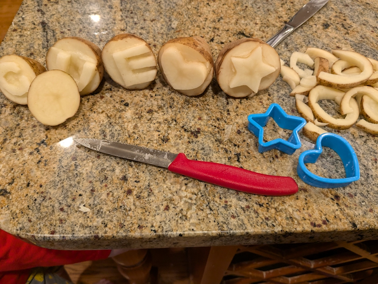
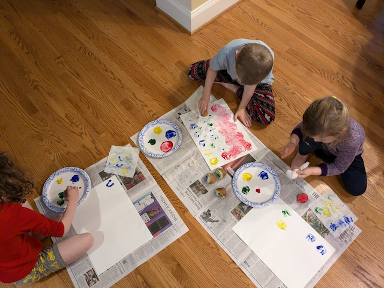
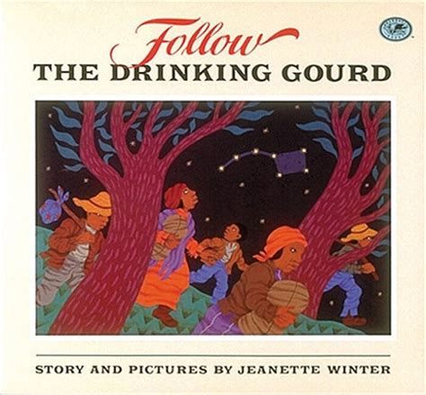

The long arc of America’s story is all about striving to live up to the ideals set forth in the Declaration of Independence, that “all men are created equal” and “they are endowed with certain unalienable rights and that among these are life, liberty, and the pursuit of happiness.” The story of Harriet Tubman’s struggle to escape from slavery contrasts the passion for freedom that people yearn for with the failure to live up to that central component of American exceptionalism.
Harriet’s personal relationship with the Lord highlights another critical aspect of American exceptionalism: In God We Trust. With the Lord’s help, Harriet throws off the chains of slavery. And with Him guiding her, she returns to the Slave States again and again to lead others to the Free States and their first taste of the promises set forth in the Declaration.
While Harriet gives all glory to the Lord, her hard (and dangerous) work also illustrates the American exceptionalism themes of self-reliance and, as part of the Underground Railroad, voluntary associations and community life – independence and interdependence.
Historically, her story sets the stage for the Civil War. When she escapes slavery in 1849, the Free States and the Slave States are exactly even, 15 states apiece. Tensions between the North and South will rise over the next ten years as Harriet leads more of her people to freedom and Congressional battles erupt over new states entering the Union which might tip the balance towards freedom or slavery.

Title: Moses: When Harriet Tubman Led Her People to Freedom
Author: Carole Boston Weatherford
Illustrator: Kadir Nelson
Year Published: 2006
Length: 48 pages
Below is one suggestion for your week with the book Moses. Please experiment with what works for your family! (Note: not all activities are included in the suggested sample week below).
toc: "American Heritage Songbook: _Amazing Grace_"
time: 5 minutes
freq: daily
Amazing Grace! How sweet the sound That saved a wretch like me. I once was lost, but now am found Was blind but now I see.
Amazing Grace is one of the most popular Christian hymns ever written, telling a story of forgiveness, redemption and grace through God’s infinite mercy. John Newton wrote the words in 1772 but it wasn’t until 1835 that the melody we know today was joined with the words. More than 250 years later, it is sung millions of times every year.
The hymn is autobiographical in nature. John Newton was heavily involved in the Atlantic slave trade until his spiritual awakening. He was ordained in the Church of England and became a prominent abolitionist, living to see the slave trade abolished in England a few months before his death in 1807.
Amazing Grace became newly popular, crossing over to secular music during the 1960s folk music revival, popularized by recording artists like Judy Collins in this version, and Joan Baez, who leads her audience in singing it, in this version. It has been recorded thousands of times since then; here’s a version by Celtic Woman (with bagpipes!) and this one by Celine Dion has the lyrics on the screen.
toc: "Arts & Crafts: Potato Stamps"
time: 30 minutes
prep: 20-30 minutes
supplies: potatoes, paring knife, paint, paper, optional small cookie cutters
Up ahead, she hears word that patrollers are nabbing runaways, and crouches for days in a potato hole, dreams she is buried alive.
Have a grown-up slice the potatoes in half. Then make a stamp out of the flat (cut) side of the potato. There are two ways to do this:
Insert a small cookie cutter into the flat side of the half potato and then use the paring knife to cut about a 1/4 to 1/2 inch off of the flat side of the potato around the cookie cutter. Remove the cookie cutter. The cookie cutter shape should be higher than the rest of the potato.
Or use the paring knife to free-hand a design into the potato. I like to do letters (for my children’s initials), but keep in mind potential mirror image issues with the stamp.
After the potato stamps are made, dip the potato into paint and then stamp it onto paper. Children can make designs with the stamps or paint scenes around the stamps.
 
toc: "Geography: Slave & Free States"
time: 15 minutes
supplies: U.S. puzzle
I am Your child, Lord; yet Master owns me, drives me like a mule. Now he means to sell me south in chains to work cotton, rice, indigo, or sugarcane, never to see my family again.
The goal of this exercise is to illustrate the geographic nature of the slavery issue. It can be done multiple ways. We used a puzzle of the United States but it can also be used with a paper map of the United States.
Divide the states into three categories:
Outside the puzzle frame, have the children assemble the Free States. Then, below them, have them assemble the Slave States. (Alternatively, use a paper map and have them color the Free States one color and the Slave States a different color). Identify which are the southern states and which are the northern states by showing them a simple compass rose with just the four cardinal directions on it.
Ask your children to find the state of Maryland, where Harriet first lived. Next, ask them to locate the state of Pennsylvania (and the city of Philadelphia) where Harriet found Free Soil. Then push the Slave States and the Free States together so they can see how close Maryland and Pennsylvania are. Finally, point out how far slaves had to go if they wanted to escape from the Deep South – and why Harriet had to escape before she was sold “south.”
time: 10 minutes
supplies: Coins & Currency
In God We Trust
Time and time again throughout the story Harriet places her trust in God. Ask your children if they know the official motto (motto: “short expression of a guiding principle;” “short phrase indicative of something’s character or use”) of the United States. Show them coins and currency and ask them to find the motto “In God We Trust’’ engraved on each of them. You can also ask them to find the unofficial mottos of the United States, “Liberty” and “E Pluribus Unum” (Out of Many, One), on each of the coins. The next time you read Moses, ask them to point out each time Harriet trusted God.
This short phrase can be an easy one for your kids to memorize over the course of this module.
time: 45-60 minutes
prep: 20-30 minutes
Harriet knows that most strangers would turn her in, not help her. But the farmer’s wife feeds Harriet, then tells her to sweep the yard.
This recipe is taken from the book Bravetart: Iconic American Desserts by Sheila Parks, where she writes: While doughnuts could be made plain and cakey with saleratus (an early form of baking soda), prior to the Civil War, most were ‘raised’ with yeast. … By nature, thick potato yeast required the least flour of all, resulting in moist and tender doughnuts that stayed fresh longer than any other type. In 1848, Catharine Beecher (sister of Harriet*) noted in her Domestic Recipe Book that ‘Those who use potato yeast like it better than any other.’
Boil, steam, microwave, or bake your potato until tender.
Once the potato is cool enough to handle, peel the skin off.
Press the potato through a ricer or fine-mesh sieve (I used a small metal sieve. Using a grater is more challenging, but could work depending on the consistency of the potato).
Measure out 3/4 cup of the potato that has gone through the sieve (scooped gently not packed).
Combine flour, sugar, yeast, salt, nutmeg, and baking soda in a food processor and pulse until combined.
Add milk, melted butter, egg, and measured potato. Process until dough is silky smooth (about 65 seconds). You can also knead the dough on low speed for about 15 minutes using a stand mixer with a dough hook.
Transfer dough to a lightly greased bowl, cover with a cloth and proof (allow to rise) until puffy and light though not necessarily doubled (about 75 minutes at 70 degrees Fahrenheit). To test dough, press gently with a flour-dusted fingertip. If the indentation springs back, let it rise 15 more minutes. Dough is ready when it retains only a shallow impression.
Turn the dough onto a lightly floured work space (we used a very large cutting board). Divide dough into sixteen portions and round each into a ball. (My kids enjoyed helping with this step!)
Flatten the ball and then pinch through the center with your fingers. Then stretch dough into a roughly 3-inch ring. Put ring on lightly greased parchment-lined baking sheet and repeat with the other 15 balls of dough.
Cover with plastic and let rise until roughly doubled (about 75 minutes). Or refrigerate overnight and then bring to room temperature (this is what we did for morning doughnuts).
Briefly microwave the refined coconut oil to liquefy.
Pour oil into a stainless steel pot until there is two inches worth of oil in the pot.
Use a cooking thermometer (candy thermometer works) to warm oil to 360 degrees Fahrenheit.
Line a plate or baking sheet with a double layer of paper towels. When the oil is at the correct temperature, carefully drop a “tester” dough ring into the oil.
Let it start to brown and then flip it over. It should take about 90 seconds total (45 seconds on each side).
Use tongs to remove from the oil and place on the paper towels. Allow to cool and split open the doughnut to confirm it is cooked through.
After the tester doughnut, cook the rest of the doughnuts similarly (potentially a few at a time if the pot is large enough).
Eat plain or sprinkle with powdered sugar (or cinnamon, etc.) and enjoy! Yum!
*Harriet Beecher Stowe wrote Uncle Tom’s Cabin. Harriet and Catherine’s father, Lyman Beecher, was a famous abolitionist preacher, part of the Second Great Awakening.
time: 20-30 minutes
prep: 20-30 minutes
Harriet hands out shirts and shoes, serves butterbeans and biscuits to newly arrived runaways, while agents who plot escape paths pass on secret routes that she learns by heart.
Wash, peel, and cut potatoes into quarters.
Boil in a large pot of water for about 15-20 minutes until a fork can be inserted easily into the potatoes.
Drain the water.
Mash the potatoes in the pot using a masher or fork.
Add some butter, salt, pepper and milk. Mix until smooth and creamy. (Or use whatever mashed potato recipe you prefer.)
Spoon some mashed potatoes onto a plate and flatten/shape using a spoon or other utensil.
Add cheese, seasonings or anything else to make the potatoes look like the terrain that Harriet Tubman crossed over to get to freedom. I used some cheese to form the river, paprika to represent the fall colored trees near the safe haven, parsley to represent the forest and I made a small hole to represent the potato hole.
This is a fun, easy snack and an engaging way to review Harriet’s journey to freedom.
time: 15 minutes
prep: Minimal (download app)
supplies: Star Map App
I SET THE NORTH STAR IN THE HEAVENS AND I MEAN FOR YOU TO BE FREE. Harriet sees the star twinkling.
The North Star guided slaves like Harriet to the Free States. They did not have maps or GPS or road signs – just the stars in the heavens above. But how did they find the North Star out of all the stars in the sky?
They used “pointer stars.” The Big Dipper is one of the most recognizable constellations (technically, an “asterism”) in the night sky. The last two stars of the Big Dipper “point” to the North Star – no matter where in the sky the Big Dipper lies. (Follow the Drinking Gourd, the Supplemental Reading activity below, dramatically illustrates the importance of the Big Dipper in guiding slaves to freedom.)
For this activity you need a clear night. A star map app (e.g., Sky Guide on iOS) can also be helpful in confirming the North Star (aka, Polaris) and is a lot of fun for pointing out other stars and constellations. Many apps (e.g., Google Sky Map) can “time travel” and move the stars at a faster speed. Show how all the stars spin around the North Star, but this one star stays still. Verify with a compass (or compass app) that this star does, in fact, point north.
toc: "Re-enactment: Underground Railroad"
time: 20-40 minutes
prep: 20-30 minutes
supplies: Paper, Pens, Tape, Scissors, Blankets, Flashlights
Is this heaven, Lord? Not heaven, Harriet, FREE SOIL.
This immersive activity literally brings home the drama of Harriet Tubman’s harrowing escape. This activity combines two simple games that kids love: hide ‘n’ seek and building blanket forts.
The first step in building your own Underground Railroad is to identify and/or build secret hideouts throughout your home. Some of them can be blanket forts, others can simply be furniture that the kids can hide behind or under (our most elaborate hideout was a tunnel made from gymnastic mats to imitate the “potato hole” Harriet hid in for seven days – we were out of potatoes so we put some oranges in it and called it the “orange hole”).
The second step is to create a series of North Stars to guide the kids from hideout to hideout. If your child does not know how to draw a five-pointed star this can be a fun time to teach them. If they do, make at least enough of them to match the number of hideouts. Number the stars and attach them in the order you want the kids to follow the Underground Railroad. If your kids get carried away making North Stars (like ours did) you can scatter them on the floor to help indicate the direction they should go.
Finally, when it gets dark, give each child a flashlight. Then, with one parent acting as the Conductor, assemble in your first hiding place and wait for “midnight.” The other parent (the Patroller) can turn off all the lights in the house, with the last one being the room with the first hideout, simulating daytime turning to night. When it is “midnight” the Conductor helps lead the kids to the next hideout, emphasizing the need for quiet so they don’t get caught by the Patroller.
As the Conductor and kids “ride” the Underground Railroad, the Patroller “pursues” them, making appropriate comments and noise – stomping around their hiding places, howling like a bloodhound, shining a flashlight like a searchlight, simulating daytime/night time while they hide in the “potato hole.” And perhaps being right behind them when they make the final dash to “Free Soil” (“liberty” cookies at the final station can remind the kids of the rewards brought by “life, liberty, and the pursuit of happiness.”) Older children may want to take on the role of “Conductor” or “Harriet” in subsequent re-enactments.
You can get as elaborate as you want recreating Tubman’s escape. We added a blue blanket to simulate the stream she crossed to evade the dogs; our six-year old took off her socks to imitate Harriet removing her shoes. When we originally field tested this exercise with our three-year-old (“We made it to Freedom!”) and our five-year-old (“Daddy almost got us but we made it to Free Soil!”) they both loved it. You can drive the lesson home at the end by asking your children: “How do you think Harriet felt when she made it to Free Soil?”
time: 10 minutes
Joe had a plan. At night when work was done, he’d teach the slaves a song that secretly told the way to freedom. Just follow the drinking gourd, it said.

Title: Follow the Drinking Gourd
Author & Illustrator: Jeanette Winter
Year Published: 1991
Length: 48 pages
While Harriet Tubman was the most famous of the Underground Railroad “conductors” she was not the only one. Follow the Drinking Gourd tells the story of Peg Leg Joe and the song he taught to slaves. Hidden within the song were directions to Free Soil. The most important, most often repeated lyric was to “follow the drinking gourd,” the Big Dipper star constellation that led them north.
Ask your kids to look for the drinking gourd as Molly and James’s family flee north. They should also search for the mark of Peg Leg Joe on the trees. Sometimes it is easy to see but other pages it is harder.
time: 10 minutes
But Moses said to God, “Who am I, that I should go to Pharaoh and bring the Israelites out of Egypt?” And God said, “I will be with you.”
If your children are not familiar with the classic Biblical story of Moses leading his people out of slavery and to the Promised Land, this is the perfect opportunity to share it with them. Then you can help them draw the obvious parallels with Harriet Tubman and how God called her to lead her people out of slavery. Ask them to memorize the last line, “And God said, ‘I will be with you.’”
time: 10 minutes
While the plantation sleeps, Harriet prays.
The author uses a handful of words that may not be familiar to the young reader: plantation, dusk, refuge, haven, upriver, sapling, woes. If they don’t ask what these words mean, after a couple of readings ask them to describe what they think they mean. For the words they are unclear about, re-read the context surrounding the words to see if that helps: “The woman points Harriet to safe havens – hiding places for runaways – and Harriet steals away into darkness.”
time: 10 minutes
Fly, Harriet. Your faith has wings.
Carole Boston Weatherford uses two powerful metaphors throughout her story. She introduces us to the first one in the title when she calls Harriet Tubman “Moses;” later, Weatherford has God telling Harriet, “Be the Moses of your people.” The second metaphor Weatherford uses extensively is the Underground Railroad.
Metaphors (and similes) are literary devices for comparing one thing to another. These comparisons provide a richer, more colorful way to describe things: rather than saying “very busy” we can say “as busy as a bee”, or instead of “very quick” we could say “quick as a bunny.” To describe someone sleeping deeply we can say they “slept like a log.” Comparisons using “like” or “as” are called similes. Encourage your children to think of some similes of their own. If you’ve observed your children making comparisons of their own, be sure to point these out.
Find the similes and metaphors in the book (or point them out next time you read it):
Sometimes we leave out “like” or “as” and just say something “is” what it’s compared to. At the end of the book, God directly calls Harriet “Moses” rather than saying she’s “like” Moses. This is a metaphor. Ask your children to think of ways that she was like Moses.
Another metaphor in the book is the Underground Railroad, which is neither underground nor a railroad. What does “Underground Railroad” conjure up in their minds when they hear it? How is it a metaphor for the escape routes used by escaping slaves? It’s like a railroad by having stations and conductors, and it’s like underground because it’s dark at night and is hidden from casual observers.
time: 10 minutes
Lord, don’t let nobody turn me ‘round. I’d rather die than be a slave. HARRIET, KEEP GOING. YOU HAVE ALREADY GLIMPSED THE FUTURE.
Authors can use different words to convey emphasis, but they can also write the same word in different styles. These are called fonts. Look at a few sample pages of the book and identify the three primary fonts used by the author.
Almost every page includes a dialogue between Harriet and God. In a typical dialogue, the spoken words are indicated by setting them off with apostrophes. Because the dialogue between Harriet and God is unspoken, the author uses different typefaces to mark the conversation. Whenever Harriet speaks to God, the author uses italics, where the typeface is slanted, to indicate Harriet’s words. Whenever God speaks to Harriet, the author uses a typeface consisting only of capital letters.
The next time you read the book, ask your children to count how many lines of italic text are on each page and how many lines are All Capitals.
Finally, you can sit down at a computer with your children and open up a blank document with word processing software. Type your children’s names in different fonts and sizes. If they are old enough, give them the opportunity to type some letters or names themselves, changing fonts whenever they want. Make sure you demonstrate the most common ways authors use emphasis in their fonts: italics, bold, and underline. And have fun with the wackier fonts (recommendation: save fonts like Wingdings till the end because you may lose control at that point :-)
time: 10-15 minutes
Risking her own life, Harriet returns to the dreaded South and rescues her family.
History comes alive when presented via a heroic tale with exciting graphics. Dry recitation of names, dates, places and events can’t compare to showing the personal relationship with the Lord that led Harriet Tubman to freedom. You can use Harriet’s relationship as an opportunity to share your own testimony with your children.
Another way to connect children (and adults) to historical events is through their family history. Harriet’s escape from slavery happened a long time ago. But we all have ancestors who lived through that period. Do you know who they were? Did they live in the North, South, or West? Or were they in another country? Do you know if they played any role in the historical events covered in the story? Were there any similarities between your ancestors and Harriet Tubman or the people who helped her as part of the Underground Railroad?
time: 5 minutes
freq: daily
In the underbrush, Harriet sinks into a deep sleep. God cradles her.
When Harriet sleeps in the woods, she is surrounded by many woodland creatures. See if your kids can find:
Ask your kids to draw an animal that might live in the woods – either one from the story or a different one.
time: 10 minutes
In the Promised Land, Philadelphia, the sun shines gold in the trees, and Harriet feels light as a cloud.
An important artistic decision is how the artist wants to illuminate the subjects he or she is painting. Where is the source of light? How bright is it going to be? Where are the subjects placed relative to the light source?
Much of the story takes place at night, as Harriet travels in the darkness to both avoid detection and to use the North Star to guide her. Kadir Nelson, the illustrator, uses the moon’s light reflected on water as the light source at times and the moon’s light directly at others. During the day, Nelson uses the sun at different times to highlight his main subject, Harriet. She is backlit, silhouetted at sunset, and with the sun shining down on her from above.
Ask your children to identify the source and direction of the light in each picture. What is their favorite picture? Why? Where is the source of light for it?
time: 10 minutes
After seven days, Harriet rises from that hole like a sapling, reaches for the sun as if to touch God’s hand.
There are a variety of ways to play the traditional game of Hot Potato. Start by asking the kids to sit in a circle (works with at least three but a few more is better). Hand one of them a real potato (you can also use a ball or beanbag as the “potato”). Start passing the potato from person to person in a circle. Then recite the poem:
Hot Potato, Hot Potato Who has the hot potato? If you have the hot potato, You are out in… 5…4…3…2…1!
If you are holding the hot potato at the end of the poem, you are “out” and have to leave the circle until the next game. Continue until one person is left. Alternatively, you can play music. Whoever is holding the hot potato when the music stops is out.
{kind=link}